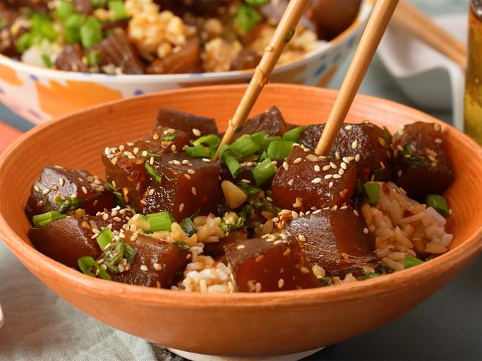

Ahi Tuna Poké

Description
This easy poke recipe is a refreshing Hawaiian salad of fresh ahi
tuna steak cubes tossed with soy sauce, sesame oil, and green onions
for a dish full of umami flavor. I like to add chopped macadamia
nuts even though they are not authentic — they add a delicious crunch!
This makes 4 main course servings or 8 appetizer servings.
Ingredients
- 1kg fresh tuna steaks, cubed
- 1 cup soy sauce
- ¾ cup chopped green onions
- 2 tablespoons sesame oil
- 2 tablespoons finely chopped macadamia nuts
- 1 tablespoon toasted sesame seeds
- 1 tablespoon crushed red pepper (Optional)
Steps
- Gather and prepare all ingredients.
- Place tuna in a medium non-reactive bowl. Add soy sauce,
green onions, sesame oil, sesame seeds, macadamia nuts,
and red pepper flakes; mix well. Cover and refrigerate
at least 2 hours before serving.
- Serve over rice.
Home